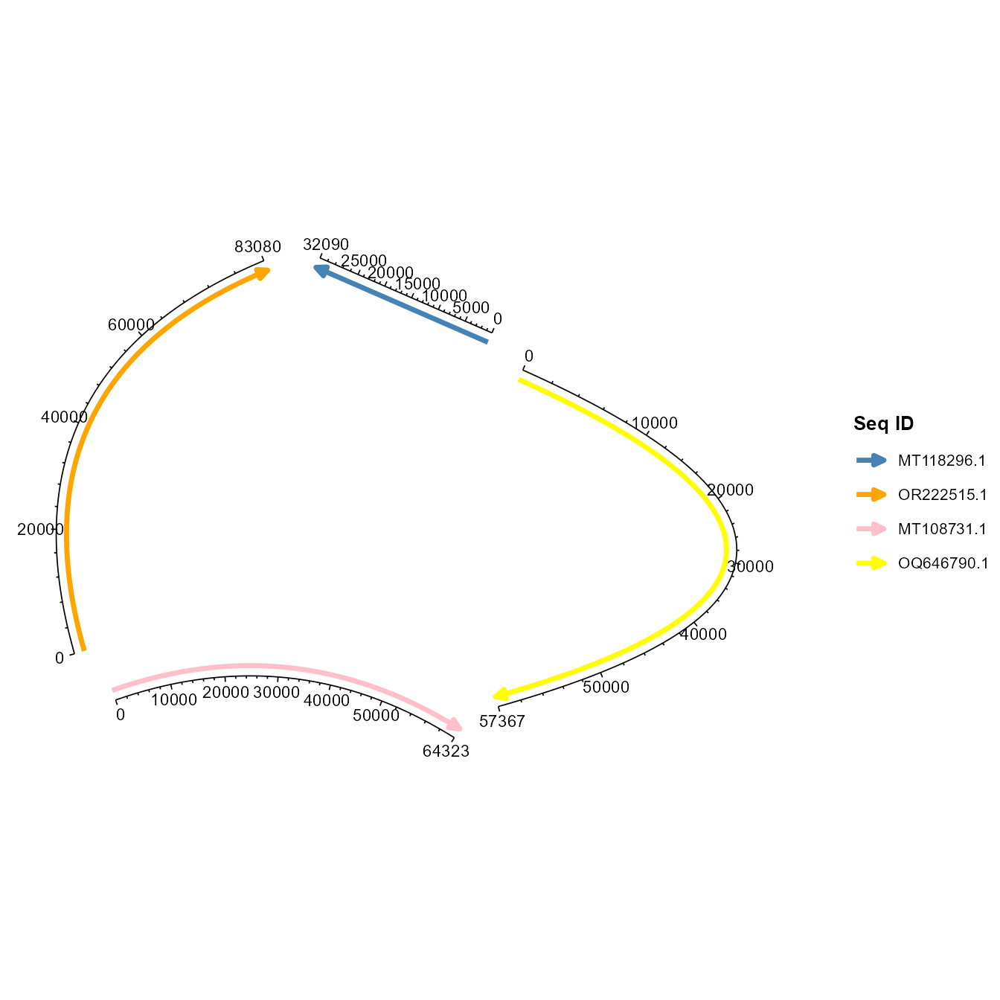

Plotting Multiple Sequence Alignment Chord Diagrams with ggchord
DangJem
2025-07-07
ggchord_vignette.Rmd1. Introduction
ggchord is a ggplot2-based R package for plotting
multiple sequence alignment chord diagrams, supporting visualization of
alignment relationships between sequences and gene annotation
information. This tutorial demonstrates its core functions and parameter
usage through examples.
2. Installation and Loading
First, install and load the ggchord package (if not yet
published on CRAN, install from local or GitHub):
# Install from local
devtools::install_local("path/to/ggchord_0.1.0.tar.gz")
# Load the package
library(ggchord)
library(dplyr) # For data processing3. Data Preparation
ggchord requires three types of data (sequence data is
mandatory):
- Sequence data (seq_data): Contains sequence IDs and
lengths
- Alignment data (ribbon_data): BLAST alignment results for
drawing inter-sequence ribbons
- Gene annotation data (gene_data): Contains gene positions
and annotation information
This tutorial uses built-in example data (added via
usethis::use_data()):
# Load built-in example data
data(seq_data_example) # Sequence data
data(ribbon_data_example) # BLAST alignment data
data(gene_data_example) # Gene annotation data (short genes filtered out)
# Inspect data structure
head(seq_data_example)## seq_id length
## 1 MT108731.1 64323
## 2 MT118296.1 32090
## 3 OQ646790.1 57367
## 4 OR222515.1 83080
head(ribbon_data_example)## qaccver saccver pident length mismatches gapopen qstart qend sstart
## 1 MT108731.1 MT118296.1 98.612 24856 314 25 26298 51139 7121
## 2 MT108731.1 MT118296.1 97.031 4412 125 5 21513 25922 2365
## 3 MT108731.1 MT118296.1 94.181 464 19 3 20691 21146 1032
## 4 MT108731.1 MT118296.1 96.689 302 10 0 20376 20677 403
## 5 MT108731.1 MT118296.1 91.736 121 10 0 19726 19846 5
## 6 MT108731.1 MT118296.1 89.344 122 9 2 19759 19877 710
## send evalue bitscore qcovs qlen slen sstrand stitle
## 1 31959 0.00e+00 43960 47 64323 32090 plus N/A
## 2 6772 0.00e+00 7417 47 64323 32090 plus N/A
## 3 1495 0.00e+00 701 47 64323 32090 plus N/A
## 4 704 5.93e-143 503 47 64323 32090 plus N/A
## 5 125 2.46e-42 169 47 64323 32090 plus N/A
## 6 830 8.90e-37 150 47 64323 32090 plus N/A
head(gene_data_example)## seq_id start end strand anno
## 1 MT108731.1 60709 63087 + hypothetical protein
## 2 MT108731.1 57550 59490 + hypothetical protein
## 3 MT108731.1 49101 50831 + hypothetical protein
## 4 MT108731.1 13064 14554 + hypothetical protein
## 5 MT108731.1 48053 49111 + hypothetical protein
## 6 MT118296.1 9575 12046 + hypothetical protein4. Basic Usage
4.1 Using Only Sequence Data
Sequence data is fundamental for drawing chord diagrams, requiring at
minimum seq_id (sequence ID) and length
(sequence length):
Adjusting Sequence Parameters
Customize sequence order, orientation, curvature, and colors via parameters:
p2 <- ggchord(
seq_data = seq_data_example,
seq_order = c("MT118296.1", "OR222515.1", "MT108731.1", "OQ646790.1"), # Sequence order
seq_orientation = c(1, -1, 1, -1), # Direction (1 = forward, -1 = reverse)
seq_curvature = c(0, 2, -2, 6), # Curvature (0 = straight line, 1 = standard arc)
seq_colors = c("steelblue", "orange", "pink", "yellow") # Sequence colors
)
print(p2)
4.2 Adding Sequence Alignment Data
Alignment data (ribbon_data) visualizes sequence
similarity, with colors defaulting to identity
(pident):
# Show sequence alignment relationships
p3 <- ggchord(
seq_data = seq_data_example,
ribbon_data = ribbon_data_example
)
print(p3)Customizing Ribbon Colors
Adjust ribbon color schemes via ribbon_color_scheme:
# Color by query sequence
p4 <- ggchord(
seq_data = seq_data_example,
ribbon_data = ribbon_data_example,
ribbon_color_scheme = "query" # Ribbon color matches query sequence
)
print(p4)
# Single color
p5 <- ggchord(
seq_data = seq_data_example,
ribbon_data = ribbon_data_example,
ribbon_color_scheme = "single", # Uniform color
ribbon_colors = "orange" # Custom color
)
print(p5)
4.3 Adding Gene Annotation Information
Gene annotation data (gene_data) marks gene positions on
sequences, with colors defaulting to strand direction
(strand):
# Show gene annotations
p7 <- ggchord(
seq_data = seq_data_example,
gene_data = gene_data_example
)
print(p7)Customizing Gene Arrow Styles
Adjust gene colors via gene_color_scheme or display gene
labels:
# Color by gene annotation category
p8 <- ggchord(
seq_data = seq_data_example,
gene_data = gene_data_example,
gene_color_scheme = "manual" # Color by gene annotation (anno)
)
print(p8)
# Display gene labels and adjust styles
p9 <- ggchord(
seq_data = seq_data_example,
gene_data = gene_data_example,
gene_label_show = TRUE, # Show labels
gene_label_rotation = 45, # Label rotation angle
gene_label_radial_offset = 0.1, # Radial offset of labels
panel_margin = list(l = 0.2) # Left margin
)
print(p9)5. Comprehensive Example
Using sequence, alignment, and gene data simultaneously with fine parameter adjustments:
p10 <- ggchord(
seq_data = seq_data_example,
ribbon_data = ribbon_data_example,
gene_data = gene_data_example,
title = "Multiple Sequence Alignment Chord Diagram (with Gene Annotations)", # Title
# Sequence parameters
seq_gap = 0.03,
seq_radius = c(3, 2, 2, 1),
seq_orientation = c(-1, -1, -1, 1),
seq_curvature = c(0, 1, -1, 1.5),
# Gene parameters
gene_offset = list( # Gene arrow offset (strand-specific)
c("+" = 0.2, "-" = -0.2),
c("+" = 0.2, "-" = -0.2),
c("+" = 0.2, "-" = 0),
c("+" = 0.2, "-" = 0.1)
),
gene_label_rotation = list( # Gene label rotation (strand-specific)
c("+" = 45, "-" = -45),
c("+" = 0.2, "-" = -0.2),
c("+" = 0.2, "-" = 0),
c("+" = 0.2, "-" = 0.1)
),
gene_width = 0.08, # Gene arrow width
gene_label_show = TRUE, # Show gene labels
# Ribbon parameters
ribbon_gap = 0.1,
ribbon_color_scheme = "pident", # Color by identity
# Axis parameters
axis_label_orientation = c(0, 45, 80, 130), # Tick label angles
axis_tick_major_length = 0.03,
axis_label_size = 2,
# Overall style
rotation = 45, # Plot rotation angle
show_axis = TRUE,
panel_margin = list(t = 0.1)
)
print(p10)
6. Notes
-
ggchordis currently in early development; some parameter combinations may cause graphical distortions, which will be optimized in future versions. - Display effects of gene labels and ribbons may require multiple parameter adjustments for optimal results.
- For more parameter details, refer to the function documentation:
?ggchord.